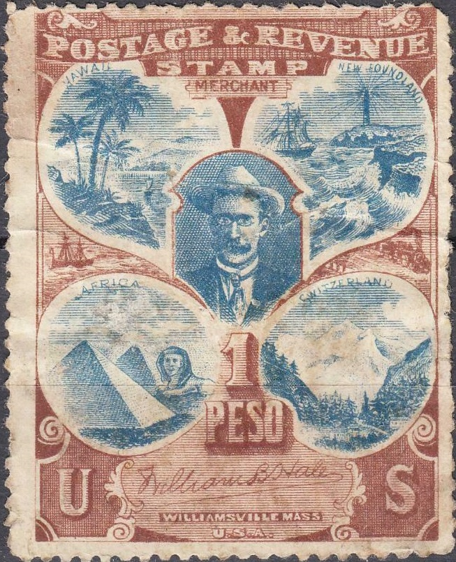
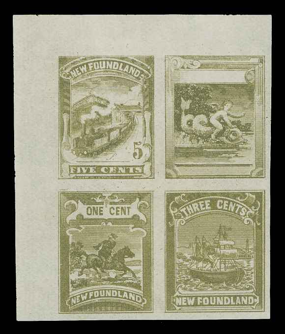

{kind=link}

'United States' stamp with "PAN AMERCICAN EXPOSITION" and "BUFFALO" and "NIAGARA" in two different colors.
Note: on my website many of the
pictures can not be seen! They are of course present in the
catalogue;
contact me if you want to purchase it.
William B.Hale was a stamp forger from Williamsville, Massachusetts (USA). According to 'Philatelic forgers, their Work and Lives' by V.E.Tyler, he mainly forged cancels, although he is known to have forged the 5 c Mobile confederate stamp.

An advertising label with 1 PESO and (I presume) the image of
William B.Hale in the center. I've also seen this label with the
blue color changed to black.
There are also some Pan American Exposition labels with his name printed at the bottom. They appear to have been printed at the same time as the above labels?:
'United States' stamp with "PAN AMERCICAN EXPOSITION"
and "BUFFALO" and "NIAGARA" in two different
colors.
The cancels he forged are known to be at least some USA cancels and precancels, Canada, Helgoland and a double circle Hiogo Japan postmark as well as forged overprints of Panama.
Hale died in 1936.
There might be evidence that he was also involved in the next Newfoundland essays (his name should be written on top of some of these sheetlets, but I have never seen it personally):
